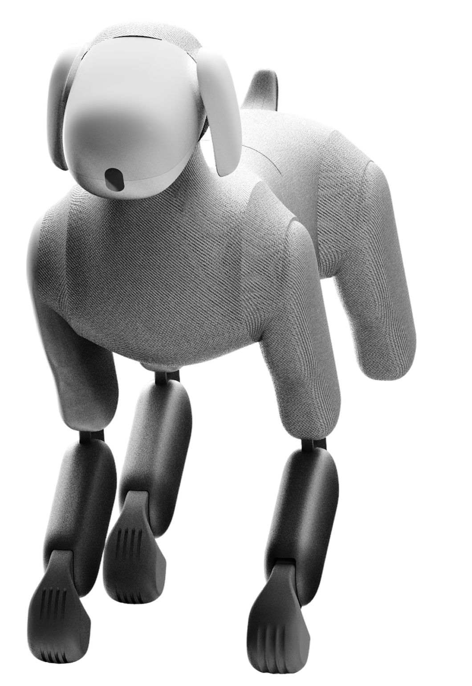
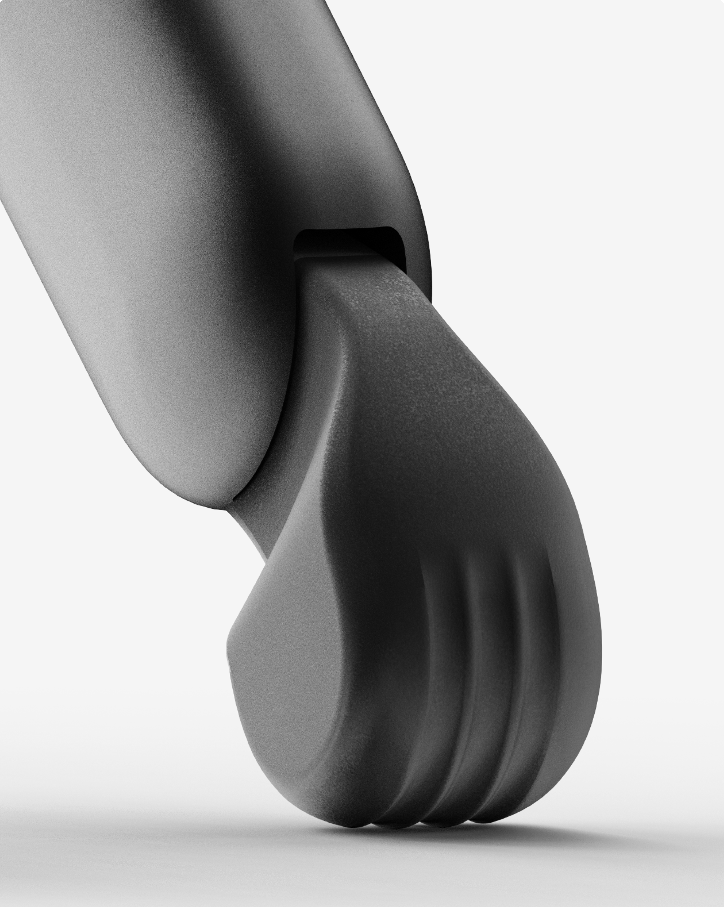

처음에는 로봇이 얼마나 자연스럽게 같이 다닐 수 있을지 걱정했는데, 생각보다 금방 익숙해졌어요. 특히 현관 앞에서 기다리고 있으면 괜히 한 번이라도 더 나가게 됩니다. 요즘은 퇴근 후 산책이 습관이 됐어요.

Even the smallest step feels easier when you have someone beside you. Lassie walks, runs, and explores with you, turning everyday movement into time spent together.
Index
Lassie makes every walk a chance
to move, explore, and connect
상태와 감정을 움직임으로 표현
소리와 사용자의 방향에 반응
다양한 야외 환경에 맞춰 안정적으로 움직임
처음에는 로봇이 얼마나 자연스럽게 같이 다닐 수 있을지 걱정했는데, 생각보다 금방 익숙해졌어요. 특히 현관 앞에서 기다리고 있으면 괜히 한 번이라도 더 나가게 됩니다. 요즘은 퇴근 후 산책이 습관이 됐어요.
러닝할 때 일정한 거리로 따라오는 게 제일 마음에 들어요. 제가 멈추면 같이 기다리고 다시 뛰기 시작하면 자연스럽게 따라와서, 기계와 운동한다기보다 러닝 메이트가 생긴 느낌입니다.
LASSIE has completely changed my evening routine. Instead of staying home after work, I find myself going outside just because LASSIE is already waiting by the door.
玄関で待っているラッシーを見ると、疲れている日でも少しだけ外に出てみようと思えます。一緒に歩く時間が、毎日の小さな楽しみになりました。
LASSIE让我重新发现了出门散步的乐趣。它会陪着我走，也会用自己的动作回应我。现在对我来说，散步不再只是运动，而是我们一起度过的时间。
My favorite part is discovering new places together. LASSIE gives me small reasons to take a different path, and those little detours have become the best part of my walks.
성격에 따라 반응이 조금씩 다른 게 가장 재미있어요. 꼬리나 귀의 움직임만 봐도 지금 뭘 원하는지 점점 알 것 같고, 오래 함께할수록 서로 익숙해지는 느낌이 들어요.
래시와 함께 새로운 산책 루트와 계절별 아웃도어 경험, 멤버 전용 이벤트, 그리고 나에게 맞는 미션을 만나보세요.
새로운 장소를 탐험하고, 새로운 친구를 만나며, 바깥에서 함께하는 시간을 더욱 특별한 일상으로 만들어 보세요.